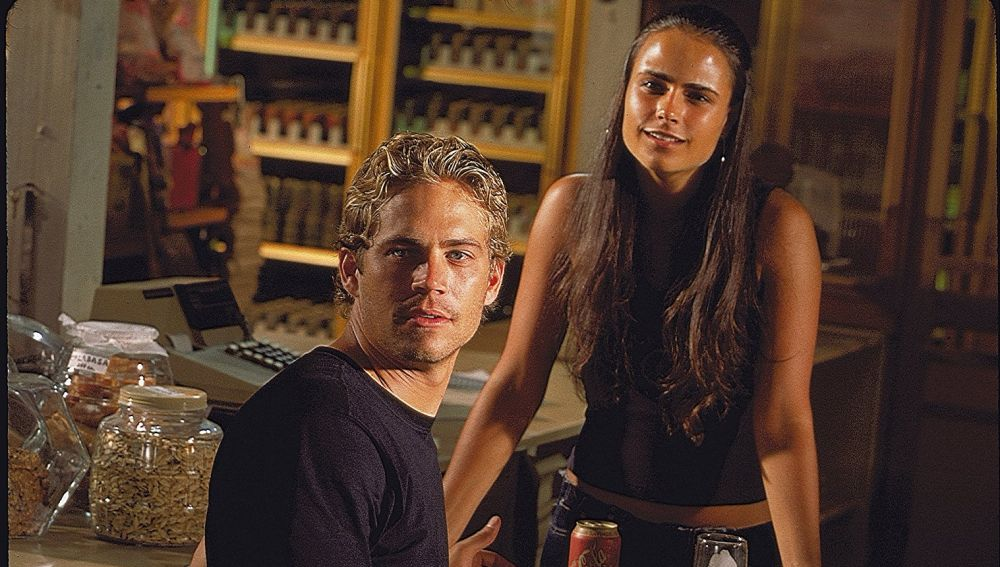
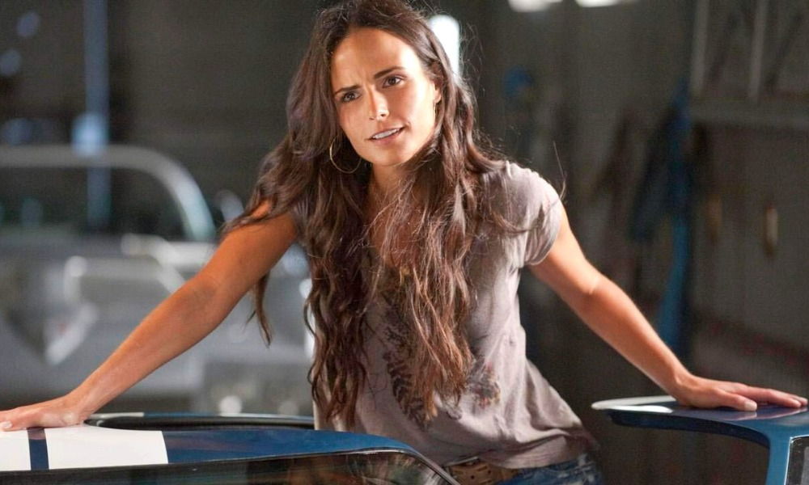

BRIAN O'CONNER: Brian O'Conner fue un personaje ficticio interpretado por el fallecido actor Paul Walker en la franquicia fílmica The Fast and the Furious. Apareció por primera vez en una película, junto a su compañero protagonista Dominic "Dom" Toretto, en The Fast and the Furious (2001). Brian fue creado por el guionista Gary Scott Thompson, quien se inspiró en un artículo sobre carreras callejeras que se publicó en la edición de mayo de 1998 de la revista Vibe. Walker fue abordado directamente por el director Rob Cohen para interpretar al personaje. O'Conner, bajo el alias Brian Earl Spilner, primero interactúa con Dominic como un oficial de policía encubierto encargado de llevarlo ante la ley. Sin embargo, lo ayuda a evadir la captura de la policía dos veces, y también ayuda a borrar los antecedentes penales del amigo de la infancia Roman "Rome" Pearce. Estos eventos ayudan a construir muchos de sus atributos: a menudo, el segundo al mando de Dom, se muestra que Brian fue honorable, honesto y protector, especialmente con respecto a su familia y esposa, Mia Toretto. Brian también es respetuoso y cree en brindar justicia justa. También es un gran piloto y desafía a Dom, el piloto más fuerte del grupo, a las carreras a lo largo de la serie.
MIA TORETTO
| MIA TORETTO | |||||||||
|---|---|---|---|---|---|---|---|---|---|
BIOGRAFIA |
Infancia Brewster nació en Panamá y creció entre Londres, Brasil y Estados Unidos. Es hija de Alden Brewster, un inversionista bancario estadounidense, y de Maria João Leal de Sousa, una modelo brasileña de la revista Sports Illustrated. Su hermana menor es Isabella Brewster. Su abuelo paterno es Kingman Brewster, Jr., quien fue un educador, diplomático, presidente de la Universidad de Yale y embajador de los Estados Unidos durante finales de los años 70. Estudió en el Convent of the Sacred Heart (Convento del Sagrado Corazón) en Nueva York y en la Professional Children's School de la misma ciudad. En 2004 se graduó de la Universidad de Yale, New Haven, Connecticut. Brewster habla portugués con fluidez. | ||||||||
TRAYECTORIA CINEMATOGRÁFICA |
De 1995 a 1998 interpretó a la heroína adolescente Nikki Grave Munson en el drama de la CBS, As the World Turns. En 1998 también apareció en la película de ciencia ficción The Faculty. | En 1999 apareció en las películas The '60s, donde interpretó a una joven que protesta por la guerra de Vietnam y en The Invisible Circus, donde interpretó a Phoebe O'Connor. | En el 2001 interpretó por primera vez a Mia Toretto en la película de acción The Fast and The Furious. Mia es la hermana de Dominic Toretto (Vin Diesel) que se enamora del guapo oficial de policía, Brian O'Conner (Paul Walker). Este papel es una de sus interpretaciones más reconocidas. |  | |||||
PERSONALIDAD |
Se muestra que Mia es una madre y una hermana muy cariñosa. Cuando el equipo de Shaw llegó para secuestrarlos, le dio a Jack a Elena, que se estaba quedando con ella, y se apresuró a regresar para dejar que la secuestraran para que no se dieran cuenta del rastro de Elena o Jack y se unieran a su hermano para salvarlo. | ||||||||